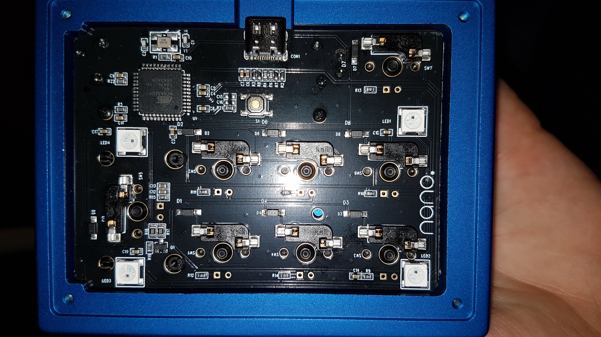
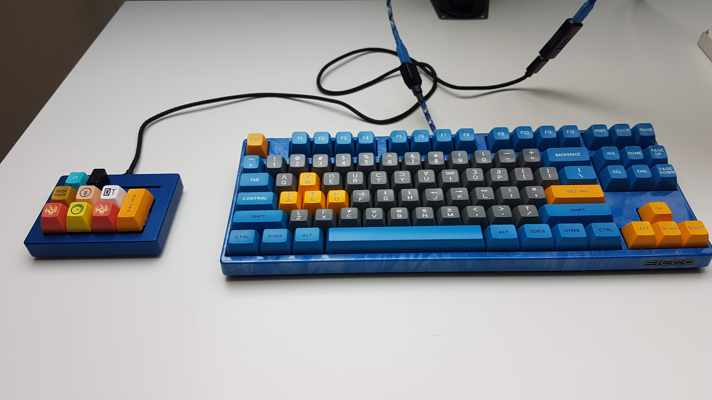
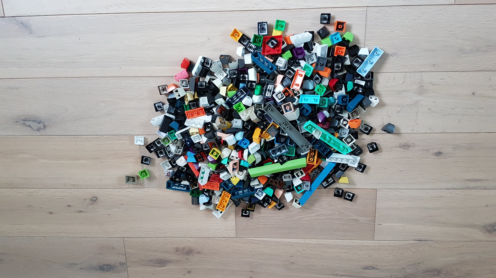
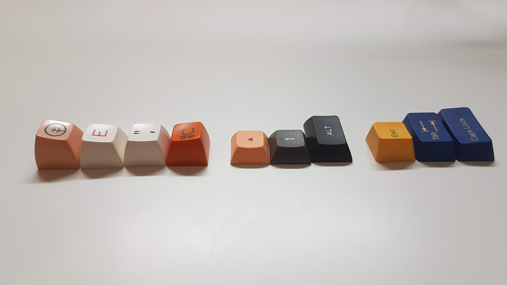
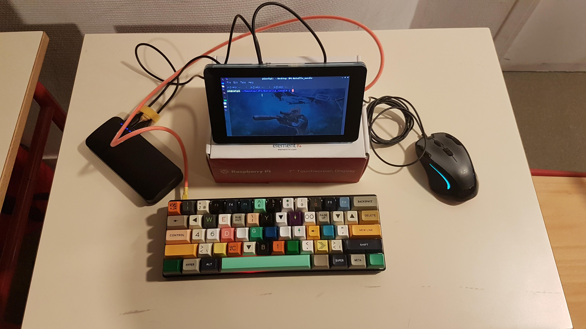

Attention, cette page a été rédigée par un passionné de clavier mécanique !
Je m’intéresse depuis novembre 2016 aux claviers mécaniques, j’ai appris beaucoup en trois ans. À travers ce texte, j’espère réussir à expliquer ma passion. J’ai pris toutes les photos sur cette page, ces claviers m’appartiennent. Je vais utiliser les dénominations anglaises car elles sont très utilisées par la communauté française et par moi-même. En survolant les photos, les informations suivantes s'afficheront : Modèle | layout | switches | keycaps.
Alex

Filco Majestouch 2 TKL | TKL ANSI | Cherry MX Brown | SP SA Symbiosis R2
NIU mini | 48 ortho | Zealios V2 78g | grab bag keycaps (profil SA)
Vortex Pok3r | 60% ANSI | Cherry MX Brown | Tai hao OEM Blue and Yellow")
Pourquoi acheter un clavier mécanique ?
Pour jouer sur ordinateur, il est souvent nécessaire de posséder un clavier (en excluant les simulations de conduite et certains RPG conçus pour être joués à la manette). Par conséquent, avoir à sa disposition un bon clavier, confortable, réactif et esthétique est important (d’après moi, le dernier point l’est tout autant). Sur cette page, je vais expliquer pourquoi l’utilisation d’un clavier mécanique est, selon moi, préférable pour jouer.
Mais d’abord, qu’est-ce qu’un clavier mécanique ?
Pour commencer, il faut s’imaginer que les touches d’un clavier sont organisées par lignes et par colonnes, c’est le fonctionnement le plus courant. Chaque touche correspond à une combinaison unique constituée de deux nombres : son numéro de ligne et son numéro de colonne. Le microcontrôleur possède un nombre de ports au moins égal à la somme du nombre de lignes et de colonnes. Lorsqu’une touche de coordonnées (x,y) a été pressée, la broche x et la broche y sont court-circuitées.

Les claviers classiques rencontrés en bureautique utilisent une membrane et des dômes. En appuyant sur une touche, le dôme s’écrase et vient presser une couche de plastique contre une autre. Elles contiennent des traces conductrices d’électricité qui, en faisant contact, ferment le circuit. Les claviers mécaniques utilisent des interrupteurs constitués d’une pièce mobile soutenue par un ressort. Lors d’un appui, deux morceaux de métal se touchent et ferment le circuit.
Ces deux principes de fonctionnement impliquent une différence majeure, il est nécessaire de presser complètement une touche sur un clavier à membrane alors que la fermeture du circuit se fait à mi-course sur un clavier mécanique. De plus, la remontée de la touche est plus douce avec un ressort. Les claviers à touches plates utilisent un mécanisme dit à ciseaux pour aider la remontée. Cependant, cela réduit la hauteur de la touche.
Par conséquent, l’utilisation d’un clavier mécanique rend la frappe moins fatigante, il n’est pas obligatoire d’écraser la touche pour que l’appui soit reconnu.
Le problème de la touche fantôme !
Lors d’une partie de jeu vidéo, il est courant d’avoir besoin d’appuyer sur plusieurs touches à la fois. Je vais prendre un exemple personnel : dans Minecraft, il m’arrive d’avancer, de m’accroupir, de sauter et de regarder la liste des joueurs. Il faut appuyer sur quatre touches en même temps. Cependant, un clavier à membrane classique est souvent limité à l’appui de trois touches. Une action ne peut donc pas être réalisée. Le joueur doit choisir quelle action doit être abandonnée à cause de son clavier. Cela est dommage. Je me souviens de la frustration vécue quand j’ai découvert cette limitation en jouant.
Il s’agit d’un problème matériel. En effet, en appuyant sur trois touches, un effet appelé ghosting apparaît, une quatrième touche est pressée virtuellement (touche fantôme). Cet effet est problématique car l’ordinateur reçoit un appui non souhaité. Pour que cela ne se produise pas, les fabricants limitent, de manière logicielle, le nombre de touches pouvant être activée en même temps. Souvent, il y a deux groupes de touches, un pour les lettres et symboles (touches alphas) et un pour les touches de fonction comme Contrôle et Majuscule (touches modifiers). Chaque groupe est limité à deux appuis. Il est ainsi possible d’utiliser les raccourcis claviers demandant trois touches.

Cependant, il existe des solutions technologiques pour contrer ce phénomène. Certains fabricants divisent leur clavier en trois groupes ou plus, les alphas, les modifiers et des touches utilisées en jeu comme WASD sur un clavier américain. Mais, la plupart du temps, ce sont des diodes qui empêchent le courant d’aller dans le mauvais sens. Ainsi, il est possible de presser autant de touches que l’on veut sans que l’effet de ghosting n’apparaisse. En réalité, pour des raisons de compatibilités avec tous les systèmes d’exploitation et les BIOS, les claviers sont souvent limités à 6 touches à la fois parmi les alphas, avec la possibilité de presser en plus tous les modifiers. On parle de 6KRO qui correspond à “6 key rollover”. Les claviers mécaniques intègrent, pour la plupart, des diodes, ainsi que certains claviers à membrane pour gamer. En conséquence, un clavier standard de bureautique va empêcher de pouvoir profiter pleinement d’un jeu demandant l’appui de plus de trois touches, il faut alors se tourner vers les claviers de gamer ou mécaniques.
Le choix d’un clavier unique et réparable
Une des importantes différences entre un clavier mécanique et un clavier à membrane est la faculté de personnaliser ce dernier. En effet, il est facile de rendre vraiment unique un clavier mécanique, les différentes photos présentes sur cette page en sont la preuve. Il est possible d’acheter des pièces pour monter son propre clavier, permettant ainsi de le réparer facilement. Un clavier à membrane pourra être peint ou recouvert d’autocollants mais un clavier mécanique pourra l’être également. Les points suivants ne s’appliquent qu’à ces derniers.
La taille et la forme
Il existe de nombreuses tailles de claviers mécaniques, du clavier full size qui correspond à un clavier classique au petit 40% (mon NIU mini en est un), il y en a pour tous les goûts ! La taille des touches varie peu mais la disposition peut être très différente. Ainsi mon NIU mini possède des touches alignées verticalement et horizontalement (on parle de ortholinear keyboard). Il existe des modèles qui sont constitués de deux parties liées par un câble, ce qui permet de les placer indépendamment l’une de l’autre.
Les interrupteurs (switches)
Cet ensemble de pièces est celui qui ferme le circuit, il s’agit d’un mécanisme constitué d’une tige posée sur un ressort qui permet le contact entre deux morceaux de métal lorsque la tige est suffisamment basse (environ à la moitié de la course du ressort). Il existe plusieurs familles de switches.
- Linear : l’appui demande une force presque constante tout au long de la distance (en réalité, le ressort se compresse et augmente très légèrement la force nécessaire).
- Tactil : linear avec une légère résistance à mi-course qui indique que l’appui a été enregistré.
- Clicky : tactil qui émet un clic sonore à mi-course.
La force nécessaire pour abaisser la touche dépend du ressort, chaque famille comprend ainsi plusieurs modèles, fabriqués par différents constructeurs. Il est possible de créer ses propres switches en mélangeant des pièces venant de différents modèles. Chaque touche est soutenue par un switch, il est donc possible d’avoir plusieurs modèles sur un seul clavier.
Choisir ses switches permet d’avoir un clavier qui est confortable et agréable à utiliser. Les switches sont soudés au PCB (printed circuit board, le circuit électronique) mais certains claviers permettent de les changer en tirant dessus, c’est pratique pour essayer différents modèles (ce sont les claviers hotswap).
Les touches (keycaps)
Il s’agit de l’élément le plus simple à changer, il suffit de tirer sur la keycap pour la retirer. La plupart des switches ont repris la croix caractéristique de Cherry ce qui permet de choisir parmi un vaste choix de keycaps. Comme pour les switches, il existe différentes familles qui définissent la forme (on parle de profil) des keycaps. Une famille peut être sculptée, les keycaps possèdent une taille différente selon la rangée ou non sculptée, les keycaps sont toutes de la même taille. Une keycap peut être cylindrique ou sphérique, cela correspond à la forme du creux permettant de poser le doigt. Il existe deux plastiques principaux, l’ABS et le PBT. Ce dernier résiste mieux à l’usure mais impose des couleurs moins vives.

Je vais citer les familles les plus répandues, l’OEM étant largement majoritaire car il est impossible de trouver les autres dans le commerce classique, il faut passer par des sites spécialisés.
- OEM : sculptée | cylindrique | famille qui regroupe les keycaps de la plupart des claviers vendus dans le commerce
- Cherry : sculptée | cylindrique | profil ancien encore très apprécié, qui ressemble à l’OEM.
- SA : sculptée (existe en non sculptée mais rare) | sphérique | keycaps très hautes et lisses, je n'utilise que cette famille
- DSA : non sculptée | sphérique | keycaps basses

Le choix de couleurs est très important, il est aussi possible d’acheter des keycaps qui possèdent des symboles à la place des lettres classiques. En effet, ce qui est écrit sur un clavier n’est pas ce qui est envoyé à l’ordinateur qui reçoit juste une information du type : l’utilisateur a appuyé sur la touche ligne 2 colonne 3.
Des membres de la communauté dessinent des keycaps qui évoquent un thème précis (un personnage, une saison, un album de musique...) et les font fabriquer. Par conséquent, un clavier mécanique peut être vraiment personnel et peut montrer une des passions de son propriétaire.
Le logiciel interne (firmware)
Pouvoir modifier le firmware est pour moi très important. Cela permet de choisir le comportement du clavier avec beaucoup de libertés. En effet, il est possible de configurer des combinaisons de touches, des macros et également décider de donner à une touche une action différente selon le nombre d’appuis et le temps entre deux appuis. Il est aussi possible d’implémenter des jeux. En outre, le firmware est dans le clavier, donc les réglages fonctionnent sur tous les ordinateurs.
J’utilise QMK qui permet d’ajouter son propre code en langage C au firmware fourni. Ainsi, mon Filco Majestouch possède une bataille navale. Je peux appuyer sur CAPS LOCK et J pour obtenir FLÈCHE GAUCHE, par exemple. Mon keebwerk et mon NIU fonctionnent également avec QMK.

Cependant, changer le firmware n’est pas possible sur les claviers des grandes marques. Elles imposent d’utiliser leur logiciel pour modifier les réglages (lorsque cela est possible).
Mais ça doit coûter cher, non ?

NIU mini | 48 ortho | Zealios V2 78g | grab bag keycaps (profil SA)")
Il s’agit du point où les claviers à membrane sortent vainqueurs. En effet, il est possible d’en trouver pour moins de 10 €, un bon modèle coûtera souvent moins de 50 €. En revanche, le prix d’un clavier mécanique est beaucoup plus élevé. Il faut environ 100 € pour un bon modèle solide et fiable. Un modèle personnalisé avec des switches et des keycaps de très bonne qualité coûtera plusieurs centaines d’euros. Je considère que mes claviers sont des outils qui me servent au quotidien, ils doivent me plaire et être confortables à utiliser. De plus, ce sont également des objets décoratifs.
Pour conclure, j’espère que cette présentation vous aura plu et que vous aurez appris des choses !
Pour découvrir plus en détail les claviers mécaniques
Ce site, rempli par des passionnés, est très complet et approfondit chacun des points abordés sur cette page. De plus, il s'y trouve de nombreux liens qui vous permettront de choisir votre prochain clavier !
Le site de la communauté française de claviers mécaniques